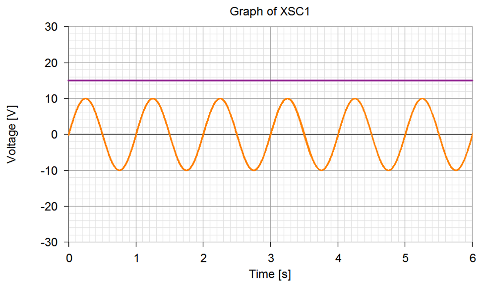
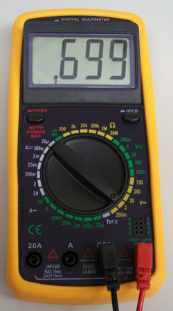

Reading an oscilloscope: Figure 17-1 shows an image of an oscilloscope graph. This oscilloscope, like many, has two channels.

- Channel 1 (orange) shows a 1Hz sine wave of 10Vpk. Note that Vpk is very easy to see on an oscilloscope.
Vrms, however, must be calculated $({10V}_{pk} \times {0.707} = {7.07V}_{rms}) $ - Channel 2 (burgandy) shows 15VDC.

Click on image to zoom.
Then click outside of image
to zoom out.
Then click outside of image
to zoom out.
Measuring AC with a Digital Multi-meter
A digital multi-meter is shown in figure 17-2. It is difficult for a multi-meter to measure AC in Vpk or Vpk-pk so it will give you a measurement in Vrms. It will typically not say that it is Vrms, it will just say VAC. The meter shown is measuring a 1Vpk sine wave. Quick math should tell you that 1Vpk = 0.707Vrms, but the meter only shows 0.699Vrms. This slight difference is in the range of error and is not uncommon.